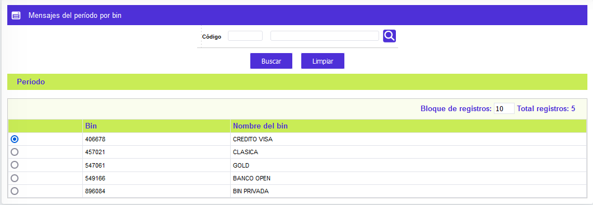
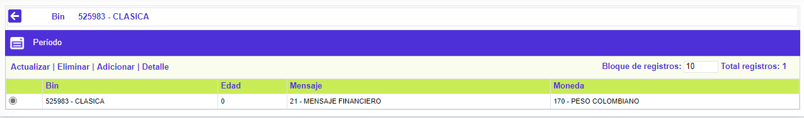
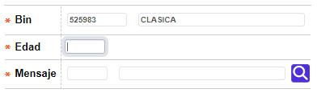
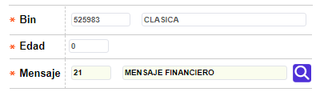
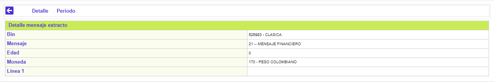

Mensaje del período por bin
Mediante esta función se habilita la consulta y mantenimiento de los mensajes asociados a la altura de mora de la deuda de los clientes.
El formulario contiene la opcion Período.

Periodo: Se selecciona la frecuencia con la cual se van a facturar las tarjetas que pertenezcan al ciclo. Las posibles opciones son Semanal, quincenal, mensual, trimestral y anual, determina la cantidad de periodos vencidos para la inclusión de mensajes en los mismos.
El formulario contiene las opciones Actualizar, Eliminar, Adicionar y Detalle.

Adicionar: Si el usuario invoca la opción Adicionar se despliega un formulario con los siguientes campos:

Bin |
Este campo despliega todos los prefijos definidos por la entidad previamente en la opción Parámetros del módulo Mercadeo, sobre los cuales se definirán los mensajes que se imprimirán en el extracto. |
Edad |
Campo numérico de 2 posiciones, obligatorio, en el cual se definen los periodos de altura de mora (expresado en meses), que deben poseer las tarjetas para asociar el respectivo mensaje. |
Mensaje |
Este campo contiene una lista de valores poblada a partir de los mensajes Financiero definidos en el tab anterior, y de la donde la entidad selecciona cuál de ellos aplicar de acuerdo con la altura de mora. Es importante aclarar que, a la altura de mora cero (0) se debe asociar el mensaje que informa a todos los clientes acerca de las tasas de interés aplicadas a los respectivos consumos. |
Actualizar: Si el usuario invoca la opción Actualizar se despliega un nuevo formulario en el cual los únicos campos modificables son: Descripción, Tipo, Línea 1, Línea 2, y Línea 3.

Detalle: Si el usuario invoca la opción Detalle se despliega el siguiente formulario:

Moneda |
Campo que posee lista de valores de la que debe seleccionarse la Moneda en que se expresan los valores del extracto al que se le asocia el correspondiente mensaje. |
Línea 1 ó 2 ó 3 |
Campos alfanuméricos de 124 dígitos cada uno, no obligatorios, dentro de los que se registran los contenidos de cada una de las líneas que para un mismo tipo de mensaje contendrá el extracto. |
.